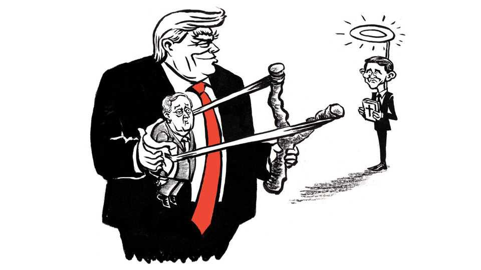

What Donald Trump understands about character in public life
And why it could be Ken Paxton’s path to victory in Texas

Sep 17th 2026
The political style of Donald Trump is so sloppy and coarse that he rarely gets the credit he deserves for cunning and even subtlety. Take his handling of Ken Paxton, the attorney-general of Texas, whose cartoonish defects as a candidate have made his race for Senate there one of this year’s most competitive contests. Mr Trump has developed a comic routine at Mr Paxton’s expense, or seeming expense. The president so relishes this act that, on the second night of his midterm convention in Dallas this month, he quoted his own delivery from the previous night, after confiding that his aides had implored him not to.
“I said, ‘I don’t like the way Ken dresses’,” Mr Trump recalled, as the crowd convulsed with laughter to hear the same schtick again. “And then I said, ‘I don’t really like the way Ken talks’.” From somewhere in the hall, Mr Paxton appeared on giant video screens, smiling nervously, shifting from foot to foot. “And then I said something they really hated,” Mr Trump went on, referring to his aides. “I said, ‘I don’t really like the way he looks’.” The president worried he was being so mean Mr Paxton might never speak to him again. But it was all right, he said, because Mr Paxton was the best attorney-general in the history of Texas, and as a senator he would vote “the way we would vote”.
To conclude, as many commentators have, that Mr Trump was just trashing Mr Paxton is still to underestimate the first president to get re-elected after being convicted of felonies. Sure, he was demeaning a lackey. But he was also hammering home a message, trying to rescue Mr Paxton by creating what politicos like to call a permission structure: You may not think much of him as a person. I get it. It’s OK. What matters is that he will deliver for you.
Mr Trump was acting on a lesson about what counts for character in public life that he has always understood far better than most. Whether on the religious right or the righteous left, voters have shown they will excuse ugly behaviour in someone they consider their champion. Mr Trump, who long ago said he could shoot someone on Fifth Avenue without losing support, believes this so deeply that he suggested Democrats had made a mistake in ditching Graham Platner, formerly their Senate nominee in Maine. They forgave Mr Platner a Nazi tattoo and past misogyny until a former girlfriend said he raped her, an accusation he denied. “I think Platner might have done surprisingly well,” the president mused in July, during the White House Correspondents’ Dinner, “because we’re in the age of Trump.”
The race in Texas is putting Mr Trump’s political theory to a severe test. Mr Paxton has never been convicted of a crime. But he has been indicted and ordered to pay restitution. Accused by eight deputies of bribery and abuse of office, he became the third official in history to be impeached by the Texas House, including by most Republicans; the state Senate acquitted him. During 20 years in public office he mysteriously became a multimillionaire with more than a dozen homes. His wife filed for divorce last year on ground of adultery; he was once caught on video helping himself to a $1,000 Montblanc pen someone forgot at a security scanner. And Mr Trump is right that Mr Paxton is a lousy orator.
He is facing, in James Talarico, a former schoolteacher who looks like a choirboy and is studying to be a minister. Eloquent and disciplined, Mr Talarico presents as not merely earnest but reverent. “Scripture tells us that you can’t love God and hate other people,” he told the late-night host Jimmy Kimmel recently. “You can’t love God and abuse the immigrant.” Democrats adore a candidate who can credibly wreathe their agenda in the creed of the religious right and charge it with hypocrisy. Mr Talarico, who is 37, has also charmed Joe Rogan, the heterodox, Trump-philic podcaster, who urged him last year to run for president.
But his emphasis on character creates two vulnerabilities. It is a short hop from public piety to sanctimony. This is a particular hazard for Democrats, who, in the age of Trump, have earned a reputation for condescension if not priggishness. The other vulnerability is that a seeming saint, unlike a known scoundrel, has a long way to fall. Mark Jones of Rice University calls Mr Paxton “arguably the most flawed candidate that Texas Republicans have put up for a major statewide office in modern history”. But Texans already know that, he notes, whereas Republicans are just starting to spend by the tens of millions to tear down Mr Talarico “so that it becomes a battle between two flawed candidates. And if they’re both equally flawed in the eyes of voters, then a majority of Texas voters would prefer someone who will vote like Ken Paxton.”
Mr Trump is unpopular in Texas, and not just character but issues like data centres are problems for Mr Paxton. He has not agreed to face his dexterous opponent in debate. Still, a Democrat has not been elected to the Senate from Texas since 1988. As the representative in the state House of what Republicans like to call “the People’s Republic of Austin”, the deeply Democratic state capital, Mr Talarico has a leftist voting record.
He also took once-fashionable positions he now disavows: he “missed the mark”, he has said, when claiming there were six genders, not two; his campaign says he is a “proud capitalist”, rather than that fellow who called capitalism “oppressive” and in need of “dismantling”. Republicans are seizing on these reversals to turn Mr Talarico from a man of principle into just another politician, a phoney. That is also the message in Mr Trump’s nickname for Mr Talarico—Talafreako—and such false claims as that he is vegan: that it is Mr Talarico, not Mr Paxton, who cannot be trusted.
The age of Trump has defined deviancy down, to repurpose the immortal phrase of Daniel Patrick Moynihan, a former senator. The race in Texas will show if it has yet to hit bottom.■